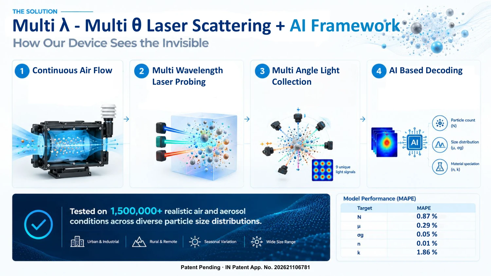
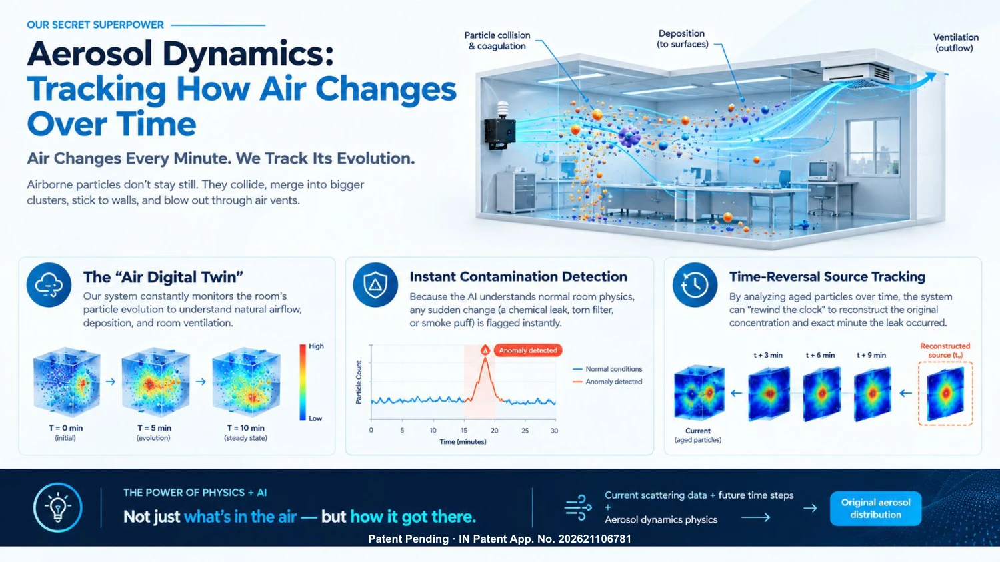

Multi-Wavelength, Multi-Angle Optical Scattering Platform for Aerosol Size-Distribution Retrieval
Physics-Informed Neural Networks + custom optical hardware for aerosol size distribution & optical characterisation
Lead inventors: Prince Vats & Dr. Sameer Patel · Indian Institute of Technology Gandhinagar
“Air quality monitors tell you how dirty the air is. We tell you exactly what is in it in real time.”
Conventional air quality monitoring faces a critical tradeoff: low-cost sensors only estimate bulk particulate mass and cannot resolve particles <300 nm, while laboratory instruments (SMPS, APS) cost ₹50 Lakh–₹1.5 Crore+, require 5–10 minutes per scan, and rely on hazardous consumables (butanol, radioactive neutralizers).
This project introduces a patent-pending, mass-deployable optical scattering diagnostic platform combining multi-wavelength laser probing, multi-angle light collection, and physics-informed deep learning for real-time nanoparticle detection down to ~10 nm at a fraction of laboratory instrument cost.


Retrieval error (MAPE) · tested on 1,500,000+ atmospheric conditions
Optical hardware & probing
- Multi-λ & multi-θ optics: multi-wavelength laser probing + multi-angle photodetectors (9 unique optical signals)
- Nanoparticle resolution: resolves particles from ~10 nm to coarse sizes
- Real-time diagnostic: 1-second continuous response with no scan delays
- Zero consumables: solid-state optics; no toxic chemicals or radioactive neutralizers
- On-device edge AI: microprocessor inference with zero cloud dependency
Physics-based optical inversion
- Aerosol optical theories: rigorous inversion of Mie & Rayleigh scattering physics via PINNs
- Optical characterisation: inversion of complex refractive index (n, k), single scattering albedo, and extinction coefficient
- Microphysical retrieval: continuous particle count (N), geometric mean diameter (μ), and geometric standard deviation (σg)
- Robust generalization: validated across urban, industrial, rural, and seasonal regimes
Aerosol dynamics: real-time air digital twin & source tracking
